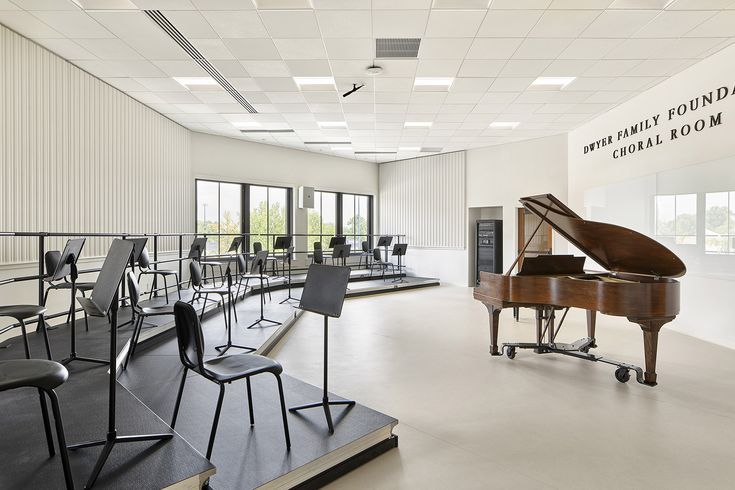
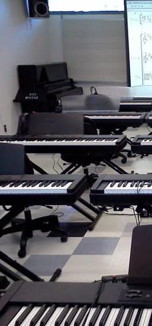
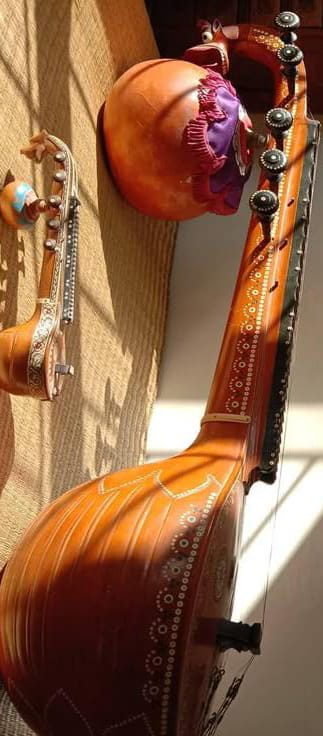
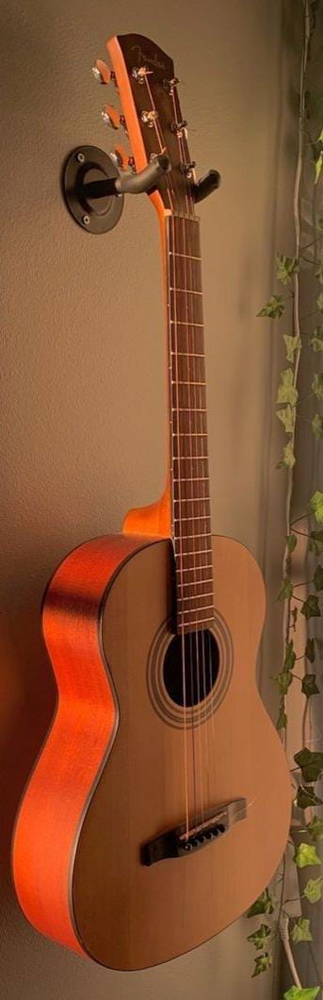
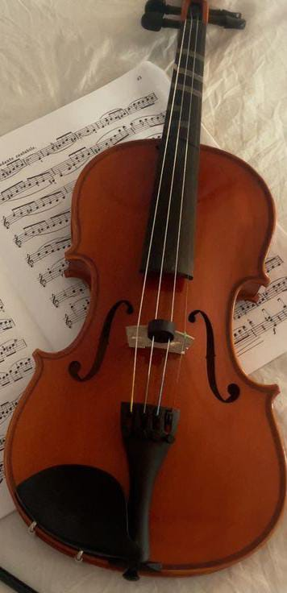
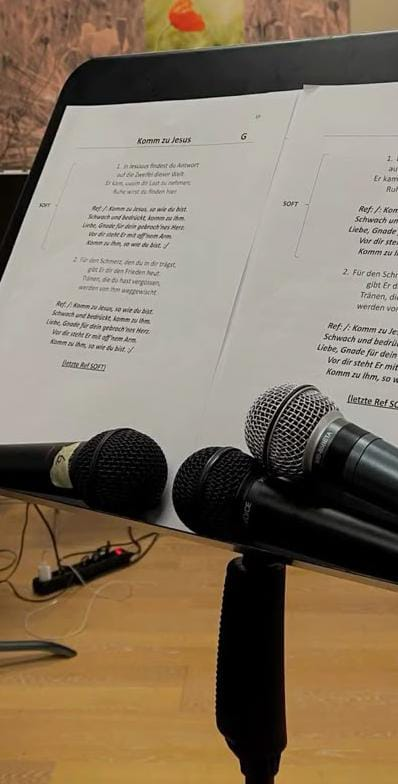

Let the music live through you…

Students begin by exploring the language of music which are rhythm, melody, and tonal awareness. This stage focuses on nurturing curiosity, listening skills, and foundational understanding, helping learners form a natural bond with sound and expression.
With strong fundamentals in place, students move into focused technical training. Emphasis is placed on posture, technique, practice discipline, and musical accuracy, enabling students to gain control and fluency over their chosen instrument.
Performance is an essential part of musical growth. Through guided practice sessions, stage exposure, and constructive feedback, students learn to express themselves confidently while maintaining composure and musical clarity.
Beyond technique and performance, students are encouraged to develop their own musical identity. This stage nurtures creativity, interpretation, and emotional depth, allowing learners to evolve into expressive and thoughtful musicians.

Harmony, rhythm and theory.
The keyboard program builds a strong foundation in harmony, rhythm, and music theory. Students develop coordination, sight-reading skills, and musical understanding that supports both classical and contemporary styles.

Classical depth and discipline.
Veena training focuses on classical depth, precision, and discipline. Students are guided through traditional techniques, raga structure, and expressive nuances, fostering a deep respect for Indian classical heritage.

Modern expression and flow.
Guitar lessons combine technical skill with creative expression. Students learn chord structures, rhythm patterns, and melodic playing, allowing them to confidently perform across various musical genres.

Precision and melody.
Violin instruction emphasizes posture, bow control, and tonal accuracy. Through structured practice and guided listening, students develop precision, musical sensitivity, and expressive performance skills.

Your voice, refined.
Vocal training focuses on breath control, pitch accuracy, and voice modulation. Students are guided to strengthen their natural voice while developing clarity, expression, and confidence in performance.